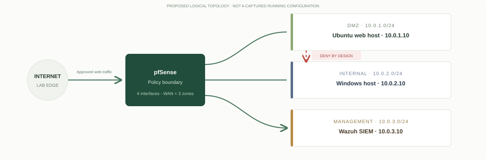

OUTCOME FRAMEWORK
NIST CSF 2.0
Supplier criticality and due diligence, access governance, network protection, monitoring, response and recovery.
FICTIONAL FINANCIAL SERVICES SCENARIO · FOUR VM LAB DESIGN
A practical security case study translating business risks into network boundaries, control intent and reproducible validation plans.
01 / ARCHITECTURE
Three distinct subnets organize the public service, internal host and management telemetry plane. pfSense is the intended policy boundary.

pfSense has a WAN uplink and a separate interface for each of the DMZ, internal and management zones. The flow matrix defines permitted paths and blocks unsolicited cross-zone access.
Read architecture details →02 / RISK REGISTER
Likelihood × impact gives a transparent starting point. These are inherent scenario estimates, with no residual scores until control evidence is reviewed.
Supplier risk is on the register. The next step is a fictional vendor evidence review with a recorded decision, remediation owner and reassessment trigger.
See register →03 / CONTROL REFERENCES
Selected relationships to NIST CSF 2.0 and ISO/IEC 27001:2022 Annex A help organize discussion. They do not establish control implementation or compliance.
Supplier criticality and due diligence, access governance, network protection, monitoring, response and recovery.
Supplier relationships, incident preparation, logging, network security and controlled change.
Proposed crosswalk only · Applicability and mappings require organizational review · Open full mapping
04 / VALIDATION
Procedures define how to test the design. None of the tests are represented as passed in this publication.
A good test record includes the test ID, target version, timestamp, exact steps, expected and observed result, sanitized artifact, reviewer and disposition.
THE NEXT ITERATION
Provision the four guests, verify the proposed flow matrix, and run the segmentation and telemetry checks with sanitized evidence.
View next steps →